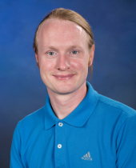

cv
Personal Information
| Name | Christoph Junghans |
 |
Education
| University | |
| Oct. 2010 | Dr. rer. nat. (Ph.D.) in Physics, Johannes Gutenberg University, Mainz, Germany |
| Nov. 2006 | Diploma (M.Sc.) in Physics, University of Leipzig, Germany |
| Minors: Meteorology, Chemistry | |
| School | |
| July 2000 | Abitur, Gymnasium Brandis, Germany |
| Major field of study: Mathematics, Physics | |
Work Experience
| Feb. 2021 - Present | Group Leader, Applied Computer Science Group, Computer, Computational, and Statistical Sciences Division, Los Alamos National Lab |
| Feb. 2016 - Present | CNLS Affiliate, Center for Nonlinear Studies, Theoretical Division, Los Alamos National Lab |
| July 2018 - Feb. 2021 | Deputy Group Leader, Applied Computer Science Group, Computer, Computational, and Statistical Sciences Division, Los Alamos National Lab |
| Jan. 2017 - July 2018 | Deputy Team Leader, Co-Design Team, Computer, Computational, and Statistical Sciences Division, Los Alamos National Lab |
| May 2014 - July 2018 | Staff Scientist, Computer, Computational, and Statistical Sciences Division, Los Alamos National Lab |
| Mar. 2013 - Apr. 2014 | Director’s Postdoc. Fellow, Theoretical Division, Los Alamos National Lab |
| Nov. 2011 - Feb. 2013 | Postdoc. Research Assistant, Theoretical Division, Los Alamos National Lab |
| May 2012 - June 2012 | Member, The Kavli Institute for Theoretical Physics, University of California, Santa Barbara, CA |
| Nov. 2010 - Oct. 2011 | Postdoc. Research Assistant, Polymer Theory Group, Max Planck Institute for Polymer Research, Mainz, Germany |
| Jan. 2007 - Oct. 2010 | PhD Student, Polymer Theory Group, Max Planck Institute for Polymer Research, Mainz, Germany |
| Jan. 2009 - July 2009 | Internship as Specialist for Application Performance & Deep Computing, IBM Systems & Technology Group |
| Oct. 2003 - Sep. 2006 | Student Assistant, Institute for Theoretical Physics, University of Leipzig |
| Aug. 2005 - Oct. 2005 | Visiting students program “Scientific Computing”, Jülich Supercomputing Centre, Germany |
| Sep. 2004 | Student Assistant, Institute for Meteorology, University of Leipzig |
| Feb. 2003 - Apr. 2003 | Service contract, Chair for Fluid Mechanics, Martin Luther University of Halle-Wittenberg, Halle, Germany |
| Mar. 2002 | Student Assistant, Institute for Theoretical Physics, University of Leipzig |
Awards
| Nov. 2019 | Top 10% most cited PLOS ONE papers published in 2015 |
| Sep. 2017 | LAAP Award in recognition of outstanding contributions to the ISTI Summer School Program |
| Feb. 2017 | Postdoc. Distinguished Mentor Award, LANL |
| July 2016 | LAAP Achievement Award in appreciation for active service on the WSST team |
| Jan. 2015 | Classified as outstanding researcher, USCIS |
| Jan. 2014 | Most cited article published in EPJE in the past 5 years |
| Mar. 2013 | Los Alamos National Laboratory Director’s Post-Doctoral Fellowship |
| May 2012 | Member of the Kavli Institute for Theoretical Physics |
| June 2010 | Participant of 60th Lindau Nobel Laureate Meeting |
| Nov. 2006 | Diploma with honor (highest possible grade) |
| Nov. 2005 | Wolfgang Natonek award, University of Leipzig |
| Oct. 2003 | Teubner award, Department for Physics and Earth Science, University of Leipzig |
| July 2000 | Book award of the German Physical Society (DPG) for high school graduates |
Open Source Projects
| VOTCA | Versatile object-oriented toolkit for coarse-graining applications | Core Developer |
| Cabana | Performance-portable library for particle-based simulations | Core Developer |
| FleCSI | Flexible Computer Science Infrastructure | Developer |
| Fedora | Linux distribution | Contributor |
| OpenSuse | Linux distribution | Contributor |
| ESPReSo++ | Successor of the ESPResSo simulation package | Developer |
| GroMaCS | Versatile package to perform molecular dynamics | Developer (inactive) |
| ESPReSo | Extensible Simulation Package for Research on Soft matter | Developer (inactive) |
For more infomation see my GitHub profile and my OpenHUB profile
Professional Skills
Referee for Scientific Journals
- ACS: J. Chem. Inf. Model. & J. Phys. Chem.
- AIP: J. Chem. Phys.
- Elsevier: Comp. Phys. Comm.
- RSC: Phys. Chem. Chem. Phys.
- and others
Code Review
Conferences
- Member of the Organization Committee for the Salishan Conference on High Speed Computing
- Chairman for the APS annual meetings
Representativ
| Nov. 2018 - Sep. 2022 | Member of the Information Science and Technology Institute (ISTI) council, LANL |
| July 2015 - June 2016 | Member of the Worker Safety & Security Team (WSST) for CCS-7, LANL |
| July 2007 - Dec. 2008 | PhD representative of the theory group, Max Planck Institute for Polymer Research, Mainz |
| Nov. 2007 - Nov. 2008 | PhD representative of the MPI for Polymer Research, Mainz |
| Oct. 2002 - Sep. 2005 | Elected member of student government (Fachschaftsrat) of the Department for Physics and Earth Science, University of Leipzig - Extensive committee work in this period incl. spokesperson, treasurer and member of several faculty/university committees |
Computer Skills
| General | Linux, AIX, Mac OS, DOS, Windows |
| Programming | C, C++, Fortran, MPI, OpenMP |
| Scripting | Shell, awk, Perl, expect, PHP, tcl, Python |
| Markup Languages | HTML, latex, mediawiki, txt2tags |
Teaching Experience
| Aug. 2021 | “Electronic Spectroscopy with VOTCA and LAMMPS” (Tutorial), LAMMPS Workshop and Symposium 2021, Virtual |
| Aug. 2019 | “VOTCA and LAMMPS for electronic spectroscopy and transport” (Tutorial), LAMMPS Workshop and Symposium 2019, Albuquerque, NM |
| May 2018 - Aug. 2018 | Co-Design Summer School (6 Students), Los Alamos National Laboratory |
| May 2017 - July 2017 | Co-Design Summer School (6 Students), Los Alamos National Laboratory |
| Oct. 2016 | “Coarse-Graining with VOTCA” (Tutorial), CECAM Workshop “Multiscale Simulations of Soft Matter with Hands-On Tutorials on ESPResSo++ and VOTCA”, Mainz, Germany |
| June 2016 - Aug. 2016 | Co-Design Summer School (7 Students), Los Alamos National Laboratory |
| May 2016 | Gitlab Hands-On course, ASC/NGC Program, LANL |
| Oct. 2015 | “Coarse-Graining with VOTCA” (Tutorial), CECAM Summer School “Simulating Soft and Active Matter with ESPResSo, ESPResSo++ and VOTCA”, ICP Stuttgart |
| Sep. 2015 | Git Hands-On course, ASC/NGC Program, LANL |
| June 2015 - Aug. 2015 | Co-Design Summer School (6 Students), Los Alamos National Laboratory |
| Nov. 2014 | Git IC Tutorial, Institutional Computing, LANL |
| Oct. 2014 | Hands-on: VOTCA, CECAM “School on Multiscale Modeling and Use of Espresso++ and VOTCA”, Mainz, Germany |
| June 2014 - Aug. 2014 | Co-Design Summer School (6 Students), Los Alamos National Laboratory |
| Aug. 2014 | Gromacs Tutorial, The Eighth q-bio Summer School, Albuquerque, NM (LA-UR 14-26188) |
| June 2014 | Gromacs IC Tutorial, Institutional Computing, LANL (LA-UR 14-24814) |
| Oct. 2013 | “Systematic Coarse-Graining with VOTCA” (Tutorial), CECAM Summer School “Simulating Soft Matter with ESPResSo, ESPResSo++ and VOTCA”, ICP Stuttgart |
| June 2013 - Aug. 2013 | Co-Design Summer School (6 Students), Los Alamos National Laboratory |
| July 2013 | Gromacs Tutorial, The Seventh q-bio Summer School, Santa Fe, NM |
| Oct. 2012 | “Systematic Coarse-Graining with VOTCA” (Tutorial), CECAM Workshop “Simulating Soft Matter with ESPResSo, ESPResSo++ and VOTCA”, ICP Stuttgart |
| July 2012 | Gromacs Tutorial, The Sixth q-bio Summer School, Santa Fe, NM |
| Oct. 2011 | Hands-on: VOTCA, CECAM Workshop “Coarse-grained Simulation of Biological Soft Matter Systems using ESPResSo”, ICP Stuttgart |
| May 2010 | Votca Workshop, CSI Darmstadt |
| Apr. 2008 - Sep. 2008 | Theoretical physics III, Johannes Gutenberg University of Mainz |
| Oct. 2007 - Mar. 2008 | Theoretical physics II, Johannes Gutenberg University of Mainz |
| Apr. 2007 - Sep. 2007 | Theoretical physics I, Johannes Gutenberg University of Mainz |
| Apr. 2006 - Sep. 2006 | Introduction to computer simulations I, University of Leipzig |
| Sep. 2004 - Oct. 2004 | Mathematical preparation course for first-year students, University of Leipzig |
Mentoring
| Feb. 2022 - Present | Postdoc. Research Assistant, Los Alamos National Laboratory |
| June 2019 - Mar. 2021 | Postdoc. Research Assistant, Los Alamos National Laboratory |
| Feb. 2018 - Apr. 2020 | Postdoc. Research Assistant (now Staff Scientist), Los Alamos National Laboratory |
| May 2018 - Feb. 2019 | Postdoc. Research Assistant (now Staff Scientist), Los Alamos National Laboratory |
| Feb. 2017 - Jan. 2019 | Postdoc. Research Assistant (now Staff Scientist), Los Alamos National Laboratory |
| Sep. 2018 | Member of PhD committee, University of Reims Champagne-Ardenne |
| June 2018 - Aug. 2018 | ECP Summer Student, Los Alamos National Laboratory |
| May 2018 - Aug. 2018 | Co-Design Summer School (6 Students), Los Alamos National Laboratory |
| May 2018 - Aug. 2018 | ASC Summer Student, Los Alamos National Laboratory |
| Feb. 2016 - May 2018 | Postdoc. Research Assistant (now Staff Scientist), Los Alamos National Laboratory |
| Dec. 2016 - Apr. 2018 | Postdoc. Research Assistant (now Staff Scientist), Los Alamos National Laboratory |
| June 2017 - Aug. 2017 | High School Internship Student, Los Alamos National Laboratory |
| Apr. 2017 - June 2017 | ASC Summer Student, Los Alamos National Laboratory |
| May 2017 - July 2017 | Data-Science at Scale Summer Student, Los Alamos National Laboratory |
| May 2017 - July 2017 | Co-Design Summer School (6 Students), Los Alamos National Laboratory |
| May 2015 - May 2017 | Metropolis Postdoc. Fellow (now Staff Scientist), Los Alamos National Laboratory |
| Aug. 2016 - Apr. 2017 | Postdoc. Research Assistant (now Staff Scientist), Los Alamos National Laboratory |
| Jul. 2016 - Sep. 2016 | CNLS Summer Student, Los Alamos National Laboratory |
| Jun. 2016 - Aug. 2016 | Co-Design Summer School (7 Students), Los Alamos National Laboratory |
| Jul. 2015 - Sep. 2015 | IC Summer Student, Los Alamos National Laboratory |
| Jun. 2015 - Aug. 2015 | Co-Design Summer School (6 Students), Los Alamos National Laboratory |
| Jul. 2014 - Sep. 2014 | CNLS Summer Student, Los Alamos National Laboratory |
| Jun. 2014 - Aug. 2014 | Co-Design Summer School (6 Students), Los Alamos National Laboratory |
| Jun. 2013 - Aug. 2013 | Co-Design Summer School (6 Students), Los Alamos National Laboratory |
| Jun. 2010 - Aug. 2010 | Summer Student, University of Mainz |
| Oct. 2005 - Mar. 2006 | Simulation methods in generalized ensembles (2 Students), University of Leipzig |
Talks
Over 50 invited and contributed talks
Selected Talks
| Sep. 2018 | Lecture: “Co-Design at Los Alamos National Laboratory”, University of Reims Champagne-Ardenne |
| Oct. 2016 | Talk: “Recent developments in VOTCA”, CECAM Workshop “Multiscale Simulations of Soft Matter with Hands-On Tutorials on ESPResSo++ and VOTCA”, Mainz, Germany |
| May 2012 | Seminar: “Particle-based multi-scale simulations using the Adaptive Resolution Scheme”, IBM Research, Almaden |
| July 2011 | Colloquium: “Locality Analysis via Adaptive Resolution Simulations”, Theoriekolloquium, Faculty of Natural Sciences II, Martin Luther University Halle-Wittenberg |
Publications
see here